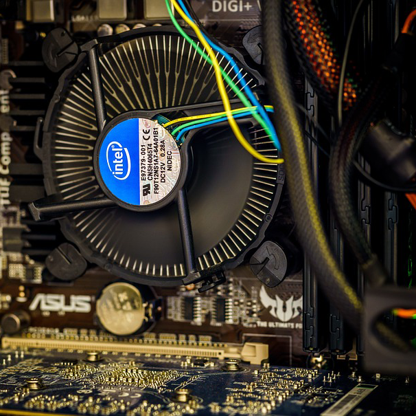

Pourquoi construire soi-même son ordinateur ?
L'interet premier est surtout une économie car un ordinateur fait maison sera bien moins cher qu'un pc acheté dans le commerce (nous n'avons pas, par exemple,la marge faite par les constructeurs). On peut parfois y voir des différences de 300€ pour la même puissance!

Quel est l'interet de ce site ?
Ce site a pour vocation de vous apprendre à monter de A à Z votre ordinateur, il vous expliquera tout les termes que vous devez connaitre et vous guidera durant le montage de votre premier ordinateur avec des étapes claires et précises. Si vous avez des questions vous pouvez me contacter en cliquant sur le boutton "Me Contacter".Pour commencer, cliquez sur le boutton "Play"